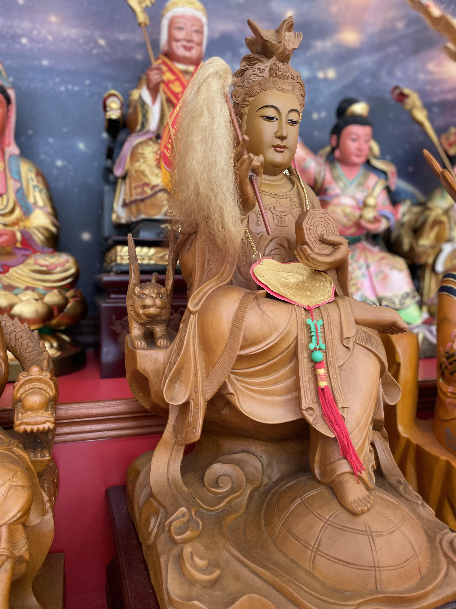

道場內神尊介紹
- 無極太上皇母娘娘
-
無極太上皇母是道教的至高女神，統領宇宙的神秘力量。她具備慈悲與智慧，是眾神之母，象徵著深邃的道義與無盡的神性。信徒崇奉她為生命的源頭，尋求她的庇佑與指引。

- 三清道祖
-
道德天尊元始天尊
 靈寶天尊
靈寶天尊三清是道教哲理「三位三體」的象徵。道教教內有「一炁化三清」之說。《道德經》說：「道生一，一生二，二生三，三生萬物。」意思是道化生為混沌元氣，由混沌元氣化生為陰、陽二氣，再由陰陽二氣衍化為天、地、人三才，由此產生天下的萬事萬物，一化為三，三本於一，因此，三清尊神就是「道」的人格化。三清，又作道祖，即玉清、上清、太清，原本指「三清境」：太清境大赤天，上清境禹餘天，玉清境清微天，位於道教天界「種民天」之上。後來指稱三清尊神，即玉清之主元始天尊、上清之主靈寶天尊、太清之主道德天尊。這三清尊神乃是道教中，世界創造之初的大神，故號稱三清道祖。
- 瑤池金母娘娘
-
西王母乃元始天王分真化炁之無極界先天仙真，配位西方，又係洞陰之主，故稱金母。西王母與東王公，分掌天下三界十方，其神格僅次於三清。故凡上天下地女子之登仙得道者，均為西王母所管轄。據《墉城集仙錄》記載：西王母（即九靈太妙龜山金母一號太虛九光龜臺金母元君）乃西華之至妙，洞陰之極尊；在昔道氣凝寂，湛體無為，將欲啟迪玄功，化生萬物之初，先以東華至真之氣，化而生木公，木公生於碧海之上，蒼靈之墟，以主陽和之氣，理於東方，亦號曰東王公焉。又以西華至妙之氣，化而生金母，與東方木公共理二氣，因此而陰陽判分乾坤肇定，而育養天地，陶鈞萬物。

- 驪山老母
-
道教典籍《驪山老母玄妙真經》中記載老母乃斗姥所化，為上八洞古仙女，相貌慈祥莊敬。 斗姥在上古降於中原驪山，化身為驪山老母，為了拯救亂世，每逢應劫轉道運，勿隱勿顯，大顯威靈。 她召賢納士，授門徒，隱居山岑傳仙法。
- 九天玄女娘娘
-
九天玄女又名九天娘娘、九天玄女娘娘或簡稱媧皇、玄女，是中國古代神話傳說中的女神，後為道教所信奉，成為女仙中著名的一位。 九天玄女為上古女神，據雲笈七籤及九天玄女傳記載：玄女為黃帝之師，聖母元君之弟子。 在黃帝與蚩尤之戰時，玄女下降，授以兵符印劍，為黃帝製夔牛鼓八十面，並薦龍庭之策而打敗蚩尤。

- 無極混元九龍太子
-
由東華木公，西王金母教法，教法之後修得陰陽諸法，練就十二顆混元龍珠，有九顆元靈，炁化九位神龍 成為真仙號稱【無極混元九龍太子】九龍為無極界母娘及一氣元始天王身邊的護法。九龍太子也稱為九龍聖主，為九龍之主統御九龍。 無極混元九龍太子，為金炁真君瑤池金母大天尊之駕前左右先鋒官，無極混元九龍太子率領駕前諸位九龍太子，各統領無極理天諸兵將。

- 觀音佛母
-
觀音佛母，佛教神話中的慈悲女菩薩，身披蓮花聖袍，手持淨瓶法器。她從千蓮之心誕生，能感應眾生苦難，以千手千眼化身普渡有情。信徒虔誠奉事，期冀得其慈悲庇佑，超脫輪迴，邁向靈性境界。

- 無上虛空地母至尊
-
地母是宇宙之母、又稱無上虛空地母，大道玄玄虛空地母、無上虛空地母無量慈尊。 地母至尊乃主宰大地山川之神、為道教四御之一、與主宰天界的玉皇上帝並列、自古即有「天陽地陰，天公地母」說法，而古人尊天親地也皆源自於人類對土地與自然的崇敬。
 - 關聖帝君
-
關聖帝君是道教中的神祇，以三國時期的關羽為依據，被視為武道聖者。他代表忠義、武勇、仁愛，是道德典範。信徒崇拜他以獲得戰勝障礙的勇氣，追求心靈的清淨與武士道的實踐，認為在關聖帝君的庇佑下，可以實現道德與武德的兼備。

- 玄天上帝
-
在宋代以前，作為玄天上帝前身的玄武，是龜蛇合體的星君。 玄天上帝大約在七世紀左右開始成為人格神，道士描述他「被髮黑衣，仗劍蹈龜蛇，從者執黑旗」，受上天封為將軍。 1018年宋真宗時，官方授予「真武靈應真君」的頭銜，由玄武而成真武，並建立官廟。

- 中壇元帥
-
中壇元帥是民間宗教裡五營兵將的主帥。 所謂的五營兵將，它們負責守護廟宇所在地域的廟宇、民眾，聽候法術、儀式專家的差遣，以驅逐地方邪祟。
- 濟公師父
-
濟公（1148年—1209年），南宋時期富有傳說色彩的佛教禪門臨濟宗楊岐派禪師，台州（今浙江省台州市天台縣赤城街道永寧村）人，法號道濟，又稱濟癲和尚、濟公活佛、濟公禪師，俗名李修緣（一名李仁遠），以不死守佛教戒律及神通廣大的顛僧形象聞名，尊其者稱濟公活佛、濟公禪師
- 女媧娘娘
-
女媧娘娘，稱之女媧氏，亦稱女希氏，是伏羲之妹，上古的女帝，因此又稱媧皇，應該是遠古僅知有母，不知有父的母系社會時代，最有貢獻的重要人物。
- 地藏王菩薩
-
地藏菩薩，又稱地藏王菩薩，佛教菩薩之一，音譯為乞叉底蘗婆，因其「安忍不動如大地，靜慮深密如秘藏」而得名。又因其發有「眾生度盡、方證菩提；地獄不空、誓不成佛」之大願故被尊稱為大願地藏菩薩、幽冥教主。亦被尊為漢傳佛教四大菩薩之一，與觀音、文殊、普賢等菩薩一同深受世人敬仰。

- 虎爺大將軍